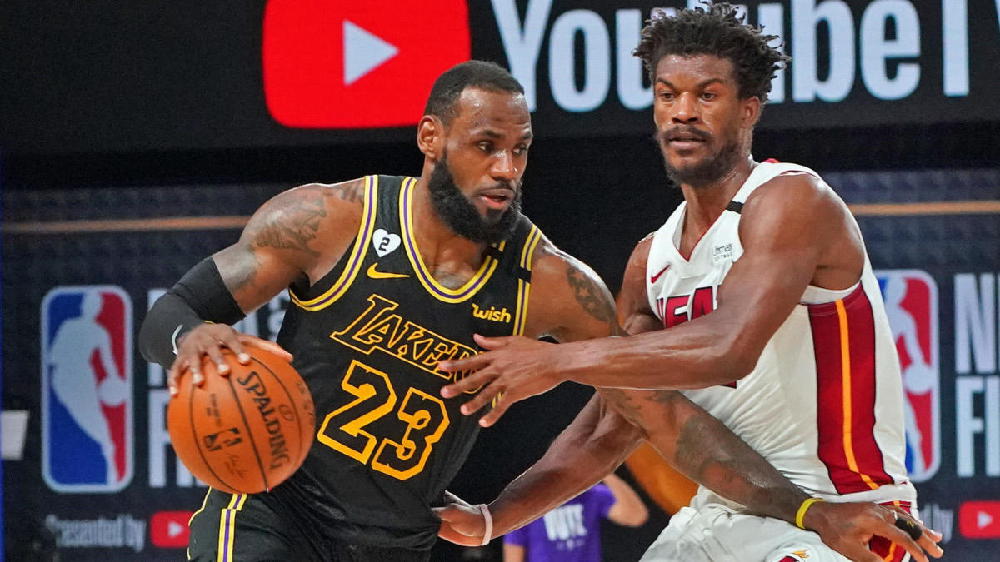

Can the NFL finish the season with the growing covid issues?

The NFL has had the unfortunate issues of trying to have a full 16 game season
with practices and travel in the middle of the Covid-19 pandemic. The first three
weeks of football went by rather smoothly with little to no issues relating directly
to Covid-19. But as we reached week four, tests started to come back positive and this
cause the NFL to make quick and drastic changes to many of the team’s schedules in order
to play games that were safe for all the players. Starting with the Steelers vs. Titans
game being rescheduled for much later in the season, and now the Patriots vs. Broncos game
has also been pushed off to another week. If the COid-19 virus continues to spread in the NFL,
it will be remarkably interesting to see if the front office has a better solution than moving
games around. Although this strategy worked well for the MLB, it is not plausible for the NFL
to reschedule games as easily due to the required time needed for the players to recover from
each of their games. Up until this point only one game per week has needed to be rescheduled
for another time, but when the time comes for more than one game to be moved, the NFL will
need a better plan.
Lebron James: Cementing a Legacy

As Lebron James journeys to game 6 of the 2020 NBA Finals he looks to cement his legacy as the
greatest of all time. Looking to complete his record-setting 10th Finals appearance with
another ring, this time with the Los Angeles Lakers. After a disappointing loss in Game 5
at the hands of a relentless Jimmy Butler, Lebron and the Lakers look to finish off the
Miami Heat in convincing fashion. This series is crucial to the legacy of Lebron James as
he has already been criticized by many for his not-so-stellar 3-6 record in the NBA Finals.
He is often compared to Michael Jordan in the discussion of greatest of all-time and Jordan’s
perfect 6-0 record in the NBA Finals, many give him the edge. But with a decisive victory over
the Miami Heat, and Lebron improving his record to 4-6, the gap continues to shrink. Lebron also
carries the burden of trying to win a championship for the city of Los Angeles after the tragic
passing of 5-time NBA Champion, Kobe Bryant, earlier this year. This could give Lebron the extra
motivation he needs, if he needs any, to dig deep and try and carry the Los Angeles Lakers to their
league tying 17th NBA Championship.
| Date |
Milestone |
Series Score |
| 2012
| First NBA Championship
| 4-1 |
| 2013 |
Second NBA Championship |
4-3 |
| 2016 |
Third NBA Championship |
4-3 |
| 2020 |
Fourth NBA Championship |
4-2 |